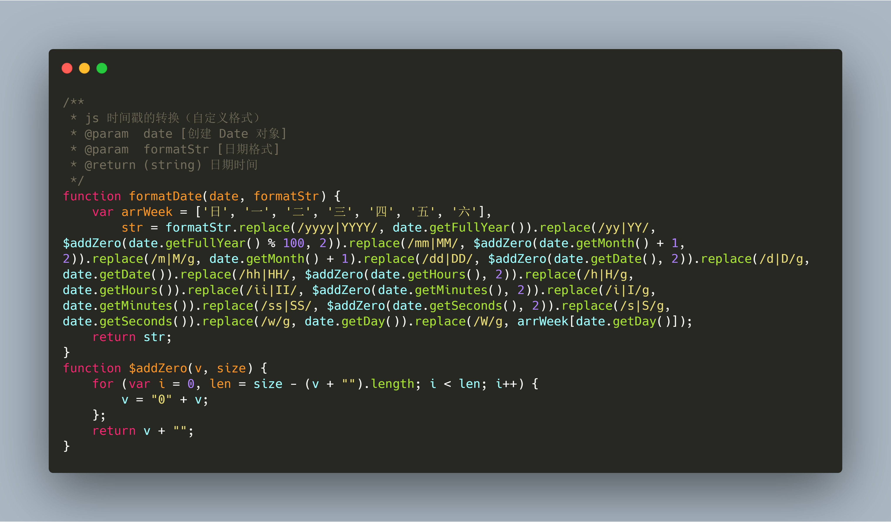

javascript 时间戳自定义格式转换，支持年月日时分秒等多种形式组合的日期和时间。
直接下载 jutils.min.js 使用，支持UMD通用模块规范。
<script src="jutils.min.js"></script>
<script>
var browser = jutils.getBrowserInfo()
</script>年、月、日、时、分、秒
var date = jutils.formatDate(new Date(1533686888*1000),"YYYY-MM-DD HH:ii:ss");
console.log(date);
// 2019-07-09 19:44:01年、月、日、周
var date = jutils.formatDate(new Date(1562672641*1000),"YYYY-MM-DD 周W");
console.log(date);
//2019-07-09 周二月、日、周
var date = jutils.formatDate(new Date(1562672641*1000),"MM-DD 周W");
console.log(date);
//07-09 周二时、分、秒
var date = jutils.formatDate(new Date(1562672641*1000),"HH:ii:ss");
console.log(date);
//19:44:01以下是摘自
jutils时间类的源码：
